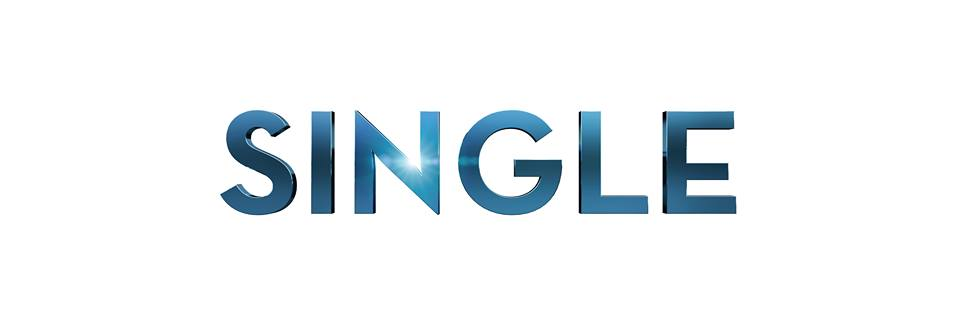

Music
Kalian bisa "mendengarkan" lagu-lagu dari Isyana Sarasvati
Select Album
Ke beranda
Album Explore!
Pilih Album
Silahkan pilih album lagu Isyana yang mau kamu dengarkan.
atau

Semua devices(PC, Android, iOS) bisa mendengarkan lagu disini :D
ISYANATION © 2016.
Nur Faqih Imam Networks
© 2012-2016.